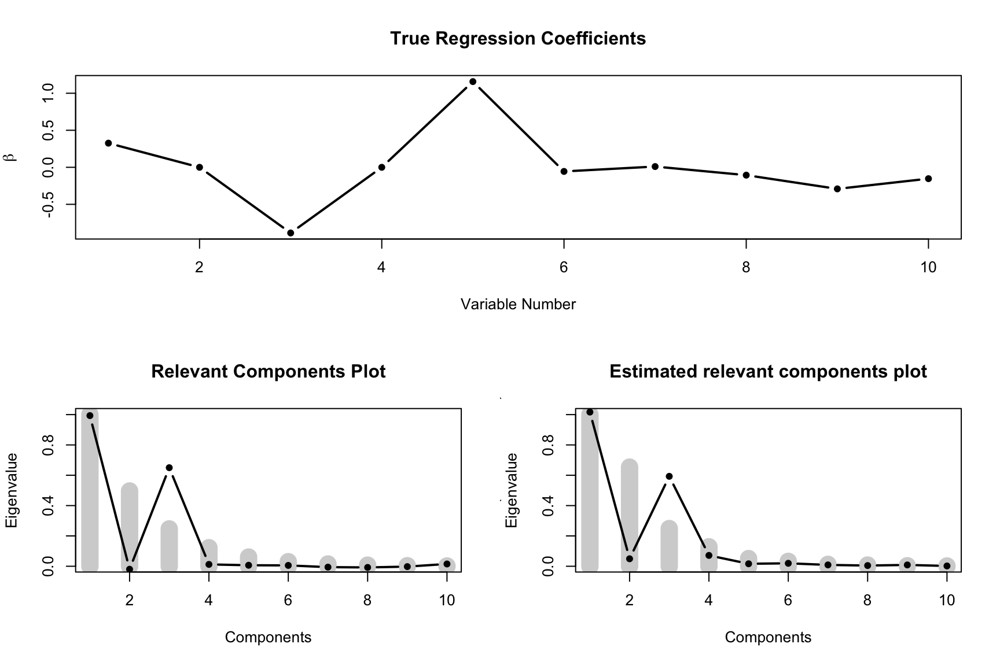
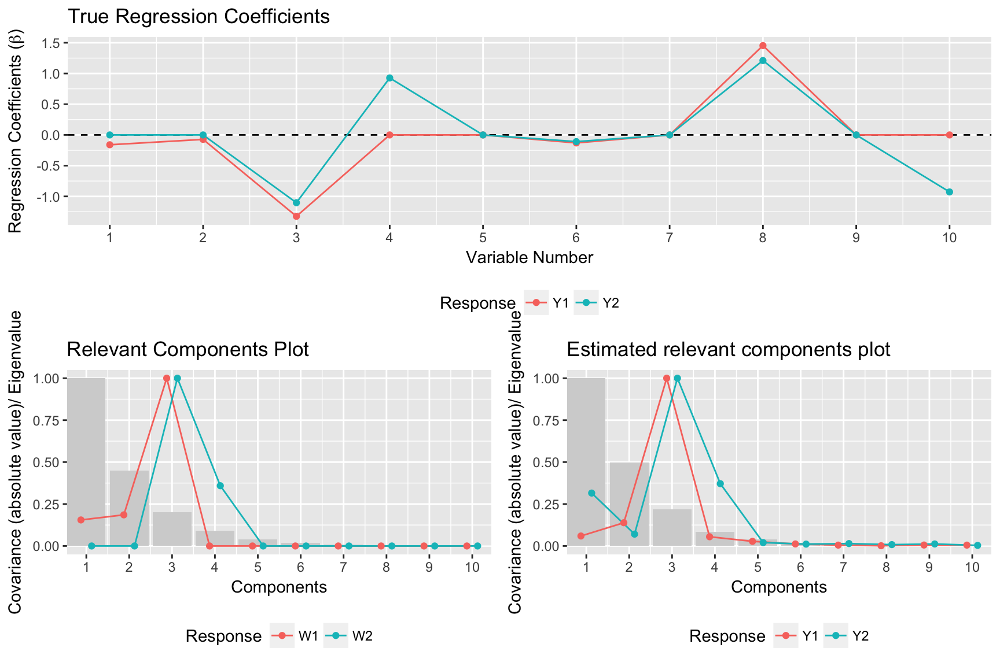
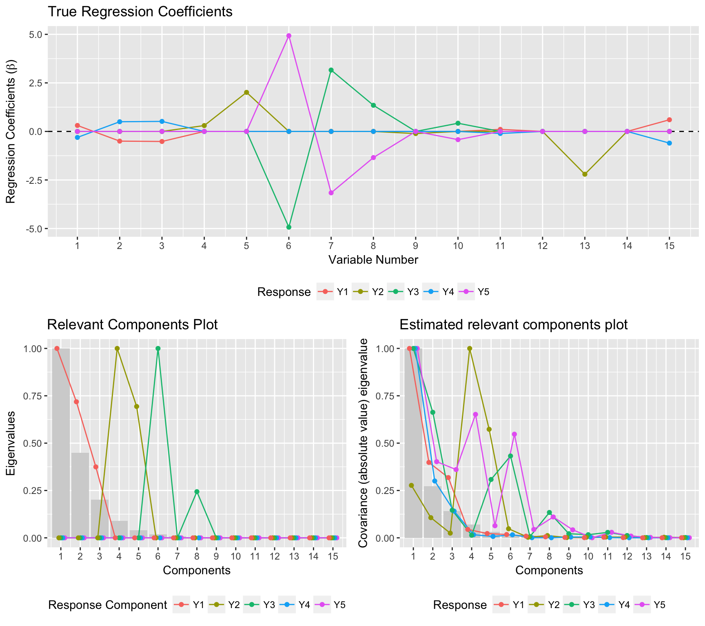

Simrel r-package is a versatile tool for simulation of multivariate linear model data. The package consist of four core functions – simrel, simrel2, simrel_m and simulatr for simulation and a plot function plot.simulatr. As the name suggests, simrel function is used for simulating univariate linear model data, simrel2 simulates bivariate linear model data where user can spup} knitr::knecify the correlation between two responses with and without given X. In addition, this function allows users to get responses (y) having common relevant components.
An extension of simrel2 is simrel_m, by which user can simulate multivariate linear model data with multiple responses. In this simulation, each response must have exclusive set of predictors and relevant predictors components. Following examples will give a clear picture of these functions. The forth function simulatr wraps around these function and calls them according to what type of data a user is simulating.
Following parameters (arguments) are used in these function,
| Parameters | Descriptions |
|---|---|
n |
Number of training samples |
p |
Number of predictor variables |
q |
Number of relevant predictors |
relpos |
Position of relevant components |
R2 |
Coefficient of determinations |
rho |
Correlation between two responses (only applicable on simrel2) |
gamma |
Decaying factor of eigenvalues of predictor matrix |
m |
Number of required response vector (only applicable for simrel_m) |
Installation
Install the package from GitHub,
# install.pacakges("devtools")
devtools::install_github("therimalaya/simulatr")Examples
Univariate Simulation:
Simulate a univariate linear model data with 100 training samples and 500 test samples having 10 predictors (X) where only 8 of them are relevant for the variation in the response vector. The population model should explain 80% of the variation present in the response. In addition, only 1st and 3rd principal components of X should be relevant for y and the eigenvalues of X decreases exponentially by a factor of 0.7.
library(simulatr)
sim_obj <-
simulatr(
n = 100, # 100 training samples
p = 10, # 10 predictor variables
q = 8, # only 8 of them are relevant
R2 = 0.8, # 80% of variation is explained by the model
relpos = c(1, 3), # First and third principal components are relevant
gamma = 0.7, # decay factor of eigenvalue of X is 7
ntest = 500, # 500 Test observations
type = "univariate" # Univariate linear model data simulation
)Here sim_obj is a object with class simrel and constitue of a list of simulated linear model data along with other relevant properties. Lets use plot.simulatr function to overview the situation,
layout(matrix(c(1, 1, 2, 3), 2, 2, byrow = TRUE))
plot_simulatr(sim_obj)
Bivariate Simulation
The wrapper function simulatr uses simrel2 for simulating bivariate linear model data. Lets consider a situation to simulate data from bivariate distribution with 100 training and 500 test samples. The response vectors y1 and y2 have correlation of 0.8 without given X and 0.6 with given X. Among 10 total predictor variables, 5 are relevant for y1 and 5 are relevant for y2. However 3 of them are relevant for both of them. Let the predictors explain 80% and 70% of total variation present in population of y1 and y2 respectively. In addition, let 1, 2 and 3 components are relevant for y1 and 3 and 4 components are relevant for y2. In this case, the third component is relevant for both responses. Let the decay factor of eigenvalues of X be 0.8.
simrel2_obj <-
simulatr(
n = 100, # 100 training samples
p = 10, # 10 predictor variables
q = c(5, 5, 3), # relevant variables for y1 and y2
relpos = list(c(1, 2, 3), c(3, 4)), # relevant components for y1 and y2
R2 = c(0.8, 0.7), # Coefficient of variation for y1 and y2
rho = c(0.8, 0.6), # correlation between y1 and y2 with and without given X
gamma = 0.8, # decay factor of eigenvalues of X
ntest = 500, # 500 test samples
type = "bivariate"
)Lets look at the plot,
layout(matrix(c(1, 1, 2, 3), 2, 2, byrow = TRUE))
plot_simulatr(simrel2_obj)
Multivariate Simulation
Multivariate simulation uses simrel_m function and can simulate multiple responses. Lets simulate 100 training samples and 500 test samples. The simulated data has 5 responses and 15 predictors. These 5 responses spans 5 latent space out of which only 3 are related to the predictors. Lets denote them by wi. Let 5, 4 and 4 predictors are relevant for response components w1, w1 and w1 respectively. The position of relevant predictor components for w1 be 1, 2, 3; for w2 be 4 and 5. Similarly, predictor components 6 and 8 are relevant for w3.
Since we need 5 response variables, we mix-up these 3 informative response components with 2 remaining uninformative components so that all simulated response contains information that X are related. Lets combine w1 with w4 and w3 with w5. So that the predictors that are relevant for response components w1 will be relevant for response y1 and y3 and so on.
In addition to these latent space requirements, let X explains 80% variation present in w1, 50% in w2 and 70% in w3. The eigenvalues of X reduces by the factor of 0.8.
simrel_m_obj <-
simulatr(
n = 100, # 100 training samples
p = 15, # 15 predictor variables
q = c(5, 4, 4), # relevant variables for w1, w2 and w3
relpos = list(c(1, 2, 3), c(4, 5), c(6, 8)), # relevant components for w1, w2 and y3
R2 = c(0.8, 0.5, 0.7), # Coefficient of variation for w1, w2 and y3
ypos = list(c(1, 4), c(2), c(3, 5)), # combining response components together
m = 5, # Number of response
gamma = 0.8, # decay factor of eigenvalues of X
ntest = 500, # 500 test samples
type = "multivariate" # multivariate simulation
)Lets look at the simrel plot;
layout(matrix(c(1, 1, 2, 3), 2, 2, byrow = TRUE))
plot_simulatr(simrel_m_obj)
RStudio Addins
To make the process easier to use, we have created a shiny gadget as an rstudio addons. If you are using Rstuio, you can access this app from Tools > Addins > simulatr. But you can also access this app using simulatr::app_simulatr(). This will open the app in a browser from where you can choose all your parameter, see the true population parametrs you will get from the simulation. When the app is closed, it will give an command output on your R console.

App-Simulatr-Screenshop